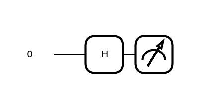
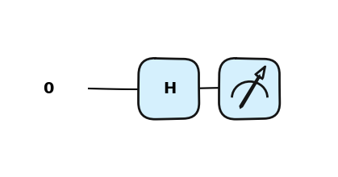

PennyLane to otwarto‑źródłowa biblioteka Pythona opracowana przez Xanadu dla kwantowego uczenia maszynowego, obliczeń kwantowych oraz chemii kwantowej.
Zapewnia wysokopoziomowy, intuicyjny interfejs do budowania hybrydowych modeli kwantowo‑klasycznych, łącząc obwody kwantowe z popularnymi frameworkami uczenia maszynowego, takimi jak PyTorch i TensorFlow.
PennyLane wprowadza pojęcie QNode (quantum node) – funkcji kwantowych, które zachowują się jak zwykłe funkcje Pythona i obsługują automatyczną różniczkowanie (autodiff).
Umożliwia uruchamianie modeli zarówno na symulatorach, jak i na rzeczywistym sprzęcie kwantowym (np. IBM Q, Amazon Braket i inne).
Dzięki PennyLane możesz: - budować wariacyjne algorytmy kwantowe,
- trenować kwantowe sieci neuronowe,
- eksplorować zaawansowane architektury kwantowego uczenia maszynowego.
Biblioteka stanowi potężny most między klasyczną sztuczną inteligencją a rosnącym światem obliczeń kwantowych.
PennyLane zawiera także spersonalizowaną wersję NumPy (pennylane.numpy), która obsługuje tablice śledzone gradientem, co ułatwia integrowanie obwodów kwantowych w procesach optymalizacji.
PennyLane
podstawowe importy bibliotek
import pennylane as qmlimport pennylane.numpy as np
🧪 Obwody kwantowe w PennyLane
Obwody kwantowe są implementowane jako funkcje kwantowe, zwane także QNode’ami.
Są to funkcje kwantowe zachowujące się jak standardowe funkcje Pythona i wspierające automatyczną różniczkację przy użyciu klasycznych narzędzi ML.
QNode’y są uruchamiane na różnych urządzeniach (devices), takich jak:
symulatory (np. default.qubit, lightning.qubit) oraz,
rzeczywisty sprzęt kwantowy (np. IBM Q, Amazon Braket, Xanadu).
Urządzenia są wymienne i określają, w jaki sposób dana funkcja kwantowa jest wykonywana.
Możemy zdefiniować nasz symulator — w tym przypadku użyjemy default.qubit.
Musimy także określić, ile kubitów chcemy użyć, korzystając z parametru wires.
Przykładowe urządzenia
default.qubit – symulator napisany w Pythonie
lightning.qubit – szybszy symulator napisany w C++
default.mixed – używany do symulacji mieszanych stanów kwantowych
dev = qml.device("default.qubit", wires=1)
## for example dev2 = qml.device("default.qubit", wires=3)dev3 = qml.device("lightning.qubit", wires=['q1', 'aux'])
Obiekt Qnode będziemy używać do definicji obwodów kwantowych. Obiekt ten wspiera wiele bibliotek do obliczeń numerycznych, tzw. interfejsów: - NumPy, - PyTorch, - TensorFlow, - JAX
Domyślnie QNodes używa interfejs NumPy. Dzięki niemu mamy dostęp do optymalizatorów domyślnych z biblioteki Pennylane. Pozostałe interferjsy wymagają użycia optymalizatorów z innych pakietów.
def qc(): # quantum circuitreturn qml.state()
wires oznacza kwantowy podsystem - czyli nasz pojedynczy kubit. Liczymy od 0 nie od 1.
Funkcja kwantowa może pobierać klasyczne pamaretry
Funkcja kwantowa może zawierać klasyczny flow (przepływ) twojego programu for czy if else.
dev = qml.device("default.qubit", wires=1)def quantum_circuit(): qml.Hadamard(wires=0)return qml.state()circ = qml.QNode(quantum_circuit, dev)circ()
array([0.70710678+0.j, 0.70710678+0.j])
from math import sqrtprint(circ()[0].real, 1/sqrt(2))print(circ()[0].real ==1/sqrt(2))
0.7071067811865475 0.7071067811865475
True
qml.draw(circ)()
'0: ──H─┤ State'
qml.draw_mpl(circ)()

obwody z wykorzystaniem decoratora @qml.qnode()
dev = qml.device("default.qubit", wires=1)@qml.qnode(dev)def qc(): qml.Hadamard(wires=0)return qml.state()qc()
array([0.70710678+0.j, 0.70710678+0.j])
import matplotlib.pyplot as pltqml.drawer.use_style("pennylane_sketch")fig, ax = qml.draw_mpl(qc)()plt.show()
Matplotlib is building the font cache; this may take a moment.

qml.probs()
dev = qml.device("default.qubit", wires=1)@qml.qnode(dev)def qc(): qml.Hadamard(wires=0)return qml.probs()qc()
array([0.5, 0.5])
a jaki wynik otrzymamy dla pustego obwodu?
dev = qml.device("default.qubit", wires=1)@qml.qnode(dev)def qc():return qml.probs()results = qc()results
array([1., 0.])
użyj qml.sample() lub qml.counts() dla innych wariantów wyników.
Ilość wykonań obwodu sterowana jest w QNode za pomocą parametru shot, który może być liczbą jak również listą liczb. > Uwaga w wersji biblioteki <0.43 - parametr shot ustawiany jest na poziomie device.
dev = qml.device("default.qubit", wires=1)@qml.qnode(dev, shots=5)def qc(): qml.Hadamard(wires=0)return qml.sample()qc()
array([[0],
[0],
[0],
[0],
[1]])
dev = qml.device("default.qubit", wires=1)@qml.qnode(dev, shots=100)def qc(): qml.Hadamard(wires=0)return qml.counts()results = qc()
dev = qml.device("default.qubit", wires=2)stan = np.array([1/2, 1/2, 1/2, 1/2])prawd = [i**2for i in stan]print(f"test: sum of probs {np.sum(prawd)}")@qml.qnode(dev)def qc(): StatePrep(stan, wires=[0,1])return qml.state()qc()
Kod naszej wartwy ukrytej w której użyliśmy obwodu kwantowego realizował następujące obiekty i funkcje:
import pennylane as qmln_qubits =2dev = qml.device("default.qubit", wires=n_qubits)@qml.qnode(dev)def qnode(inputs, weights): qml.AngleEmbedding(inputs, wires=range(n_qubits)) qml.BasicEntanglerLayers(weights, wires=range(n_qubits))return [qml.expval(qml.PauliZ(wires=i)) for i inrange(n_qubits)]
Obwody kwantowe składają się z rejestrów, które reprezentują poszczególne kubity.
Domyślnie kubity inicjalizujemy w stanie 0.
Operacje wykonywane na kubitach nazywamy bramkami.
Operacje te można wykonywać na jednym albo i wielu kubitach na raz.
Domyślnie będziemy optymalizować algortymy aby składały się z jak najmniejszej ilości bramek działających na dużą liczbę kubitów.
Graficznie można rozumieć realizację algorytmu jako stosowanie bramek na poszczególnych kubitach.
kibu2
W bibliotece PennyLane, obwody kwantowe reprezentowane są przez kwantowe funkcje, realizowane przez klasyczne funkcje w pythonie.
Schemat kodu penny lane możemy zapisać jako:
import pennylane as qmldef my_quantum_function(params):# Single-qubit operations with no input parameters qml.Gate1(wires=0) qml.Gate2(wires=1)# A single-qubit operation with an input parameter qml.Gate3(params[0], wires=0)# Two-qubit operation with no input parameter on wires 0 and 1 qml.TwoQubitGate1(wires=[0, 1])# Two-qubit operation with an input parameter on wires 0 and 1 qml.TwoQubitGate2(params[1], wires=[0, 1])# Return the result of a measurementreturn qml.Measurement(wires=[0, 1])
Bramka X obraca kubit w kierunku osi na sferze Bloch’a o \(\pi\) radianów. Zmienia \(|0\rangle\) na \(|1\rangle\) oraz \(|1\rangle\) na \(|0\rangle\). Jest często nazywana kwantowym odpowiednikiem bramki NOT lub określana jako bit-flip.
Bramka Hadamarda przetwarza stan \(|0\rangle\) na kombinacje liniowa (superpozycje) \(\frac{|0\rangle + |1\rangle}{\sqrt{2}}\), co oznacza, że pomiar zwróci z takim samym prawdopodobieństwem stanu 1 lub 0. Stan ten często oznaczany jest jako: \(|+\rangle\).